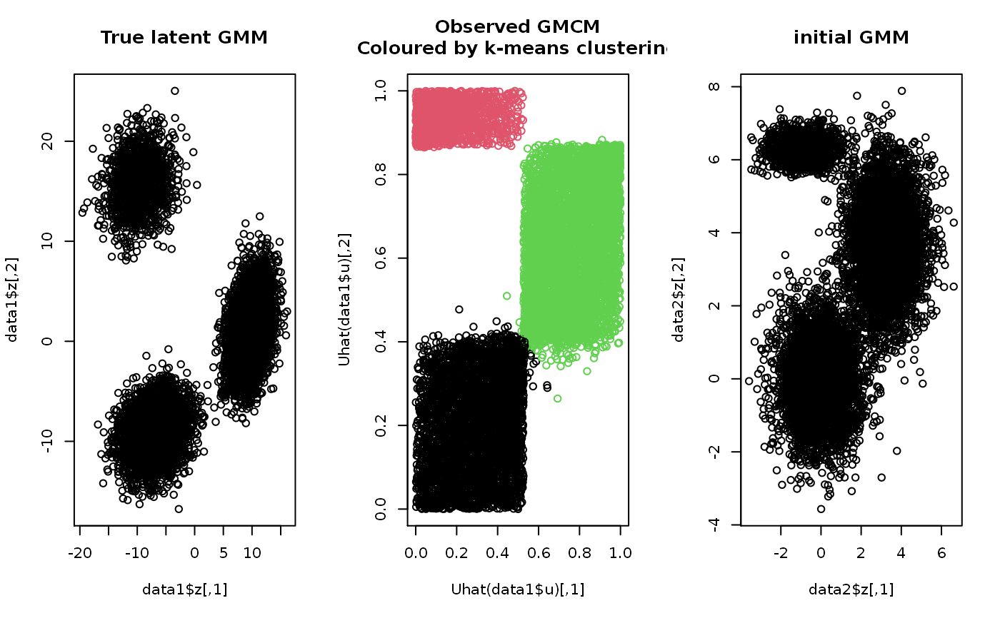
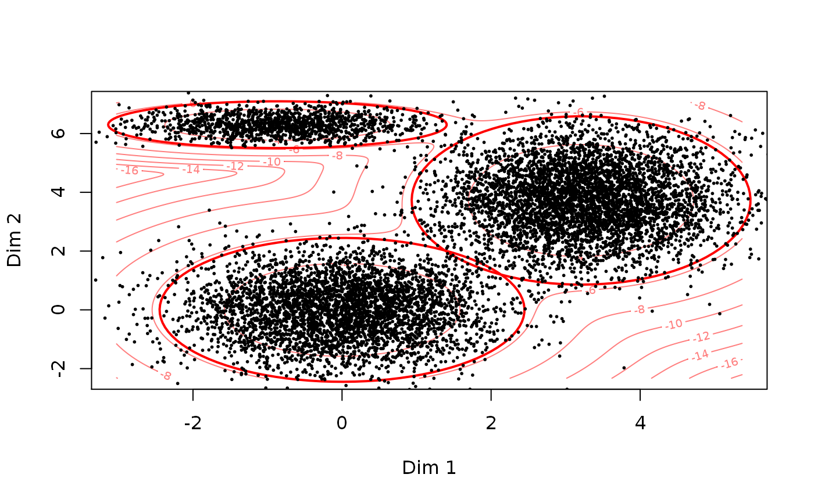

This function uses a k-means algorithm to heuristically select
suitable starting values for the general model.
choose.theta(u, m, no.scaling = FALSE, ...)
| u | A matrix of (estimates of) realizations from the GMCM. |
|---|---|
| m | The number of components to be fitted. |
| no.scaling | Logical. If TRUE, no scaling of the means and variance-covariance matrices is done. |
| ... | Arguments passed to |
A list of parameters for the GMCM model on the form described in
rtheta.
The function selects the centers from the k-means algorithm as an initial estimate of the means. The proportional sizes of the clusters are selected as the initial values of the mixture proportions. The within cluster standard deviations are squared and used as the variance of the clusters within each dimension. The correlations between each dimension are taken to be zero.
The function uses the kmeans function from the
stats-package.
set.seed(2) # Simulating data data1 <- SimulateGMCMData(n = 10000, m = 3, d = 2) obs.data <- Uhat(data1$u) # The ranked observed data # Using choose.theta to get starting estimates theta <- choose.theta(u = obs.data, m = 3) print(theta)#> theta object with d = 2 dimensions and m = 3 components: #> #> $pie #> pie1 pie2 pie3 #> 0.4002 0.1308 0.4690 #> #> $mu #> $mu$comp1 #> [1] 0 0 #> #> $mu$comp2 #> [1] -0.8668725 6.3009210 #> #> $mu$comp3 #> [1] 3.207432 3.722536 #> #> #> $sigma #> $sigma$comp1 #> [,1] [,2] #> [1,] 1 0 #> [2,] 0 1 #> #> $sigma$comp2 #> [,1] [,2] #> [1,] 0.8608994 0.0000000 #> [2,] 0.0000000 0.1056306 #> #> $sigma$comp3 #> [,1] [,2] #> [1,] 0.8622573 0.000000 #> [2,] 0.0000000 1.368835 #> #># To illustrate theta, we can simulate from the model data2 <- SimulateGMMData(n = 10000, theta = theta) cols <- apply(get.prob(obs.data,theta),1,which.max) # Plotting par(mfrow = c(1,3)) plot(data1$z, main = "True latent GMM") plot(Uhat(data1$u), col = cols, main = "Observed GMCM\nColoured by k-means clustering") plot(data2$z, main = "initial GMM")# Alteratively, theta can simply be plotted to illustrate the GMM density par(mfrow = c(1,1)) plot(theta, add.ellipses = TRUE)